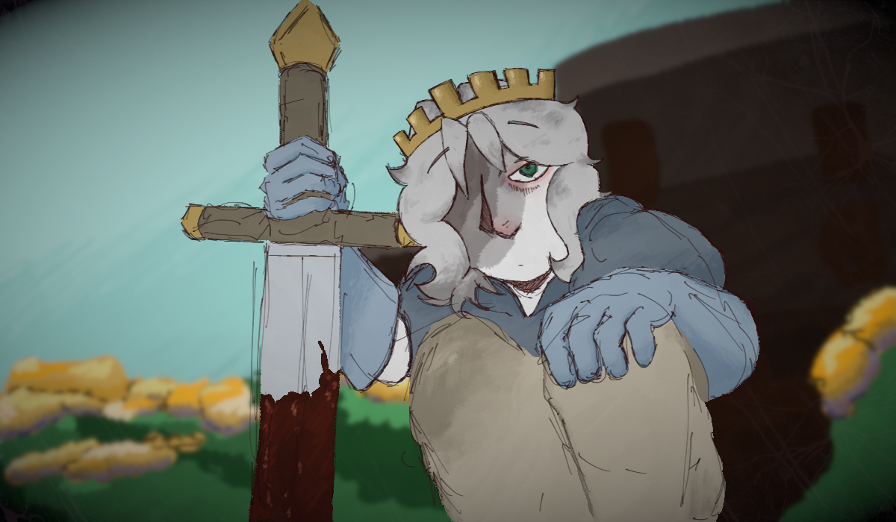

Le jardin

Vous vous retrouvez dans un jardin rempli de fleurs, une quantité semblant être impossible à s'occuper pour un être mortel. Vous sentez soudainement une douleur glaciale vous traverser le corps, où vous vous videz de votre sang dans les lits de fleurs.